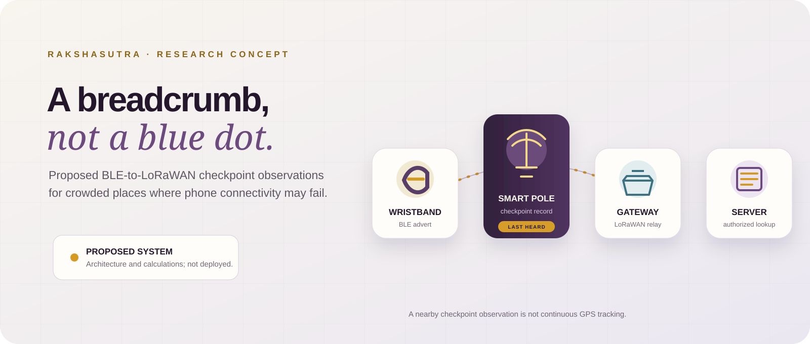
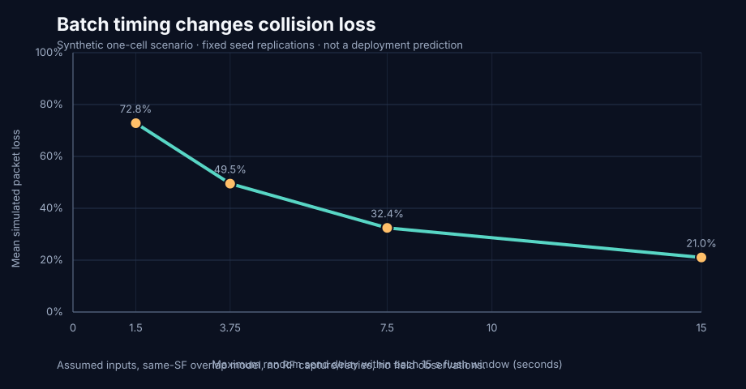

01
Phone dependence
Consumer trackers often depend on nearby participating phones and a working network path. This proposal places fixed receivers along selected routes.
Design motivation · check deployment assumptionsRakshasutra (SurakshaNet) is a proposed BLE-wearable and LoRaWAN checkpoint architecture for recording the most recent receiver observation along crowded pilgrim routes. It describes a checkpoint observation, not a live GPS location.

At a crowded shrine, a phone-based map may be unavailable or unwelcome. The proposed system asks a narrower question: “Which installed pole heard this band most recently?”
Consumer trackers often depend on nearby participating phones and a working network path. This proposal places fixed receivers along selected routes.
Design motivation · check deployment assumptionsPassive RFID can be useful at a reader gate. A checkpoint network would aim to add observations between entry and exit points.
Concept comparison · not a universal RFID limitationMetal structures and dense crowds can weaken radio links. The paper proposes pole placement and antenna choices; the repo does not contain a site survey.
Open RF question · field measurements neededSome queues or sanctum areas restrict phones. A wearable might still send a short signal, subject to local rules and consent.
Context-specific · verify with venue policyA band can only be “last heard” where a receiver is installed and the radio link succeeds. Between poles, the system has uncertainty.
One sentence to keep: last-heard is not live position.This is a proposed checkpoint aid for authorized staff. It is not a substitute for emergency operations, GPS, or human care.
Research concept · not a safety productThe concept separates the short wristband-to-pole radio hop from the longer pole-to-server backhaul. Each hop has to be built and tested.
Step through a proposed observation from wearable to authorized lookup. The map is illustrative; it does not show a measured route or live tracking.
In this illustrative family scenario, the wearable broadcasts its current rotating identifier. It does not calculate GPS coordinates.
The manuscript’s table and this repository’s synthetic event simulation answer different questions. One recomputes a formula; the other explores one chosen schedule.
Using the manuscript’s offered-load entries and P(loss) = 1 − exp(−2G):
In the configured one-hour, 3,000-tag, 60-pole scenario over 40 deterministic seeds:

The manuscript and repository are not the same thing as a validated deployment. Here are the issues a careful reviewer should see first.
| Question | What the repository can say | Status |
|---|---|---|
| Airtime and ALOHA math | Selected calculations can be reproduced under stated inputs; traffic derivation and traces are not supplied. | Partial check |
| 99.4% vehicle capture | Five opportunities require at least 64.1% independent reception per advert; no measured per-ad reception probability is supplied. | Unverified |
| Battery life and pulse load | The stated 620/434 mAh capacities and weighted 17.5983 µA current yield 48.23/33.76 ideal months, versus paper claims of 14.2/11.1. The 100 µF capacitor-only estimate gives 32 V droop for 32 mA × 100 ms. | Arithmetic mismatch |
| Latency claims | The abstract says <4 s, the system section says 2.5–5.0 s, and the conclusion says <5 s. A defined measurement protocol and raw trials are absent. | Inconsistent |
| Privacy and security | Rotating 32-bit labels have collision risk and do not by themselves establish unlinkability or secure key handling. | Needs review |
| Deployment evidence | No raw field traces, device logs, site survey, or deployment record accompany the supplied paper. | Not established |
Start with the manuscript, inspect the assumptions, then reproduce selected calculations from the repository root.
paper/rakshasutra_research_draft.pdfReader copy with the unsupported IEEE journal masthead removed; article content is preserved.
paper/rakshasutra_open.pdfOriginal supplied PDF, preserved unchanged as the source under review.
configs/claims.jsonManuscript inputs transcribed with explicit evidence notes.
simulation/audit.pyDeterministic arithmetic checks and plots; standard library only.
simulation/traffic_simulation.pySeparate event-driven synthetic scenario with 40 fixed seeds.
results/CSV outputs generated from the scripts, not field telemetry.
docs/claim-audit.mdClaim-by-claim limitations, mismatches, and questions for the next draft.
results/paper_reconciliation.csvPaper-reported numbers beside transparent recalculations and evidence labels.
results/jitter_sensitivity.csvRun-level synthetic benchmark summary across four batch-jitter settings.
tests/Small deterministic unit tests and explicitly synthetic edge-case fixtures.
This is an early research concept and analysis set. It is not a validated tracking product, emergency-response system, or safety-certified design. Do not rely on it for real-world safeguarding. Any prototype or deployment requires consent design, privacy/legal review, security testing, RF and battery testing, venue approval, and supervised operational trials.